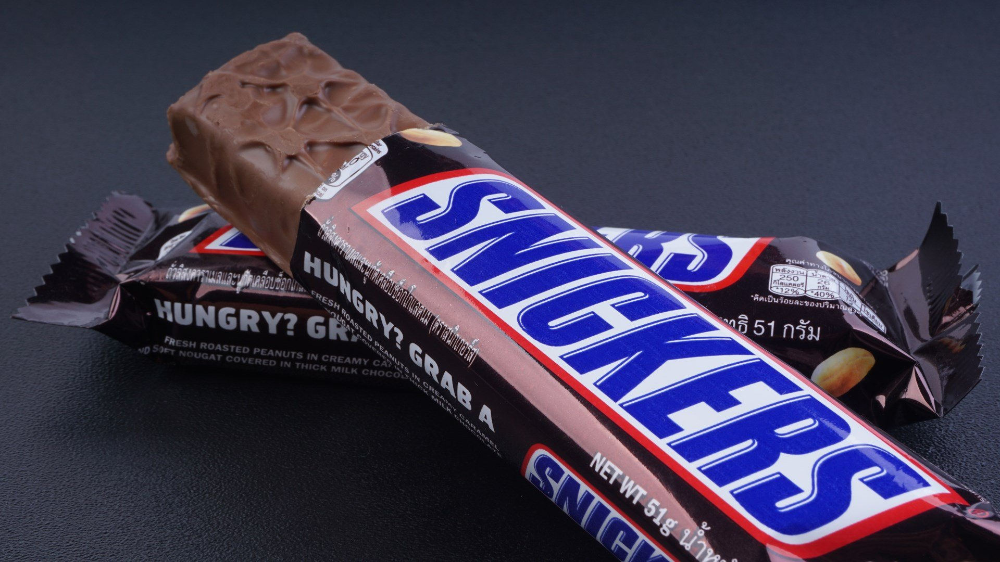

Шоколaдки к чаю
Эль примоомомомомомо
9 МЕСТО

Батончик Snickers впервые был изготовлен в 1923 году в США кондитером Франклином Марсом, но его массовое производство начато только в 1930 году[6]. Название новому батончику было дано по кличке любимой лошади семьи Марс[7]. В ноябре 1929 года в Чикаго была построена шоколадная фабрика, на которой первыми стали изготавливаться шоколадные батончики Snickers. К началу XXI века чикагская шоколадная фабрика выпускала 560 сладостей в минуту на отдельной поточной линии. На советском рынке представлен по меньшей мере с начала 1991 года.
В 1995 году вышел эпизод киножурнала Ералаш «Сила воли», где батончик Snickers лежит в основе сюжета[8].
В 2009 году в Великобритании массу батончиков «Сникерс» и «Марс» уменьшили на 7,5 %, при этом цена осталась прежней. Производители объяснили это заботой о здоровье граждан, чтобы те не переедали[9].
В феврале 2016 года в 55 странах отозваны продукты Mars, Snickers, Milky Way Minis, Miniatures по причине возможных включений пластика. В числе прочих продукция была отозвана с рынков Нидерландов, Бельгии, Великобритании, Вьетнама, Германии, Испании, Италии, Франции и Шри-Ланки[10][11][12].
width=20 height=20 align=left>